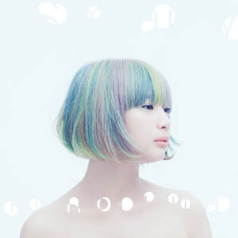

Misaki
Misaki is a brilliant music producer, with a lot of experiences producing in diverse genre.
Before founding Prisma with Okiru, she produced for Key, BEMANI, and Kyoto Animation. She has yet to reveal her face until today.
Okiru
Okiru is a legend in visual creation, elevating people's musical experience with amazing visuals.
Most of his older works can be seen on osu!, a popular free-to-play rhythm game.

Smany
Being the latest addition of Prisma,
Smany is a soothing vocalist with amazing capability to fit on diverse style of music.